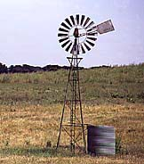

Optimising Wind Turbines

Optimisation
and Economics
Photograph © 1998
by Soren Krohn
 The
water pumping windmills to the left look very different from modern, large
wind turbines. But they are quite sensibly designed for the purpose they
serve: The very solid rotor with many blades means that they will be running
even at very low wind speeds, and thus pumping a fair amount of water all
year round.
The
water pumping windmills to the left look very different from modern, large
wind turbines. But they are quite sensibly designed for the purpose they
serve: The very solid rotor with many blades means that they will be running
even at very low wind speeds, and thus pumping a fair amount of water all
year round.
 Clearly, they will be very inefficient at high wind speeds, and they
will have to shut themselves down, and yaw out of the wind in order to avoid
damage to the turbine, due to the very solid rotor. But that does not really
matter: We do not want them to empty the wells and flood the water tank
during a gale.
Clearly, they will be very inefficient at high wind speeds, and they
will have to shut themselves down, and yaw out of the wind in order to avoid
damage to the turbine, due to the very solid rotor. But that does not really
matter: We do not want them to empty the wells and flood the water tank
during a gale.
 The ideal wind turbine design is not dictated by technology alone, but
by a combination of technology and economics: Wind turbine manufacturers
wish to optimise their machines, so that they deliver electricity at the
lowest possible cost per kilowatt hour (kWh) of energy.
The ideal wind turbine design is not dictated by technology alone, but
by a combination of technology and economics: Wind turbine manufacturers
wish to optimise their machines, so that they deliver electricity at the
lowest possible cost per kilowatt hour (kWh) of energy.
 But manufacturers are not very concerned about how efficiently they
use the wind resource: The fuel is free, after all.
But manufacturers are not very concerned about how efficiently they
use the wind resource: The fuel is free, after all.
 It is not necessarily a good idea to maximise annual energy production,
if that means that one has to build a very expensive wind turbine. In the
next sections we shall look at some of the choices manufacturers have to
make.
It is not necessarily a good idea to maximise annual energy production,
if that means that one has to build a very expensive wind turbine. In the
next sections we shall look at some of the choices manufacturers have to
make.
Relative
Generator and Rotor Size
A small generator, (i.e. a generator with low rated power output
in kW) requires less force to turn than a large one. If you fit a large
wind turbine rotor with a small generator it will be producing electricity
during many hours of the year, but it will capture only a small part of
the energy content of the wind at high wind speeds.
 A large generator, on the other hand, will be very efficient
at high wind speeds, but unable to turn at low wind speeds.
A large generator, on the other hand, will be very efficient
at high wind speeds, but unable to turn at low wind speeds.
 Clearly, manufacturers will look at the distribution of wind speeds
and the energy content of the wind at different wind speeds to determine
the ideal combination of the size of the rotor and the size of the generator
at different wind turbine sites.
Clearly, manufacturers will look at the distribution of wind speeds
and the energy content of the wind at different wind speeds to determine
the ideal combination of the size of the rotor and the size of the generator
at different wind turbine sites.
 Fitting a wind turbine with two (or more) generators can sometimes be
an advantage, but whether it really pays to do it depends on the electricity
price.
Fitting a wind turbine with two (or more) generators can sometimes be
an advantage, but whether it really pays to do it depends on the electricity
price.
Tower
Heights
In the section on wind shear, you have learned
that taller towers generally increase a wind turbine's energy production.
 Once again, whether a taller tower is worth the extra cost depends both
on the roughness class, and the cost of electricity.
Once again, whether a taller tower is worth the extra cost depends both
on the roughness class, and the cost of electricity.

|
Back | Home | Forward |
© Copyright 1998 Soren Krohn. All rights reserved.
Updated 6 August 2000
http://www.windpower.org/tour/design/optim.htm